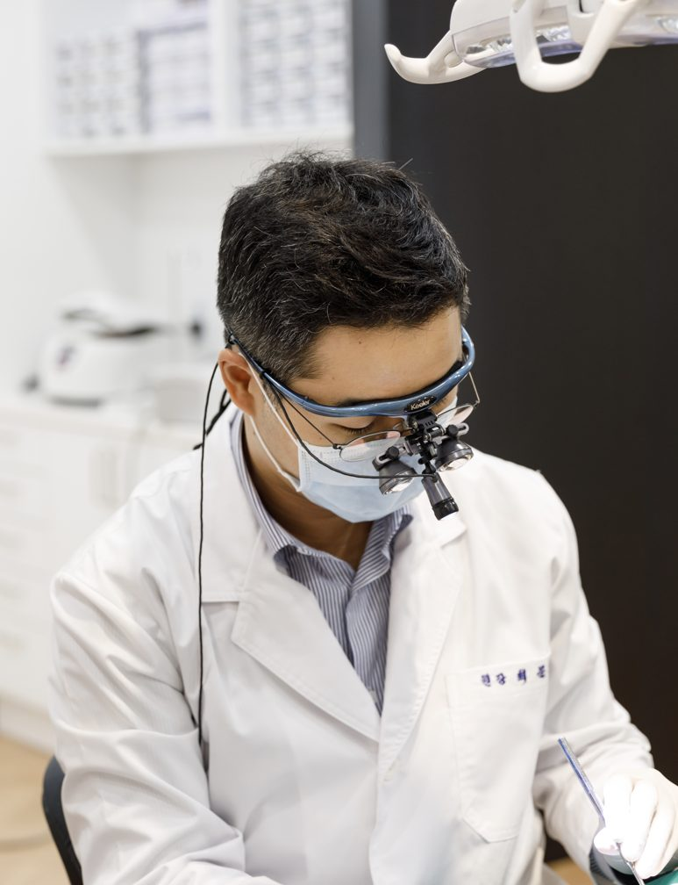
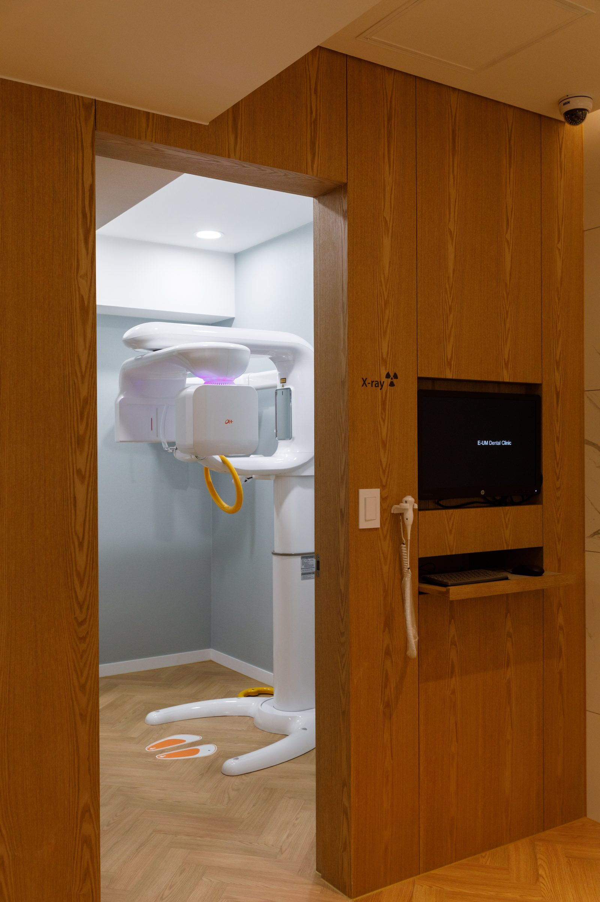
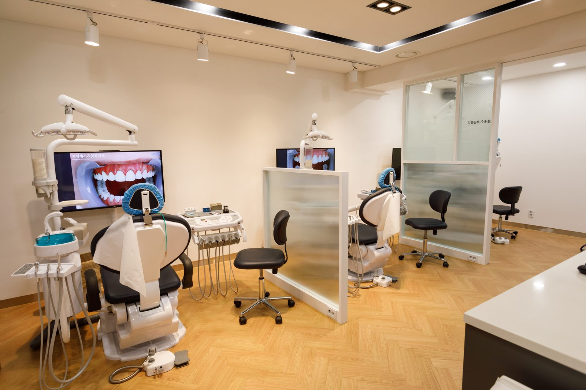
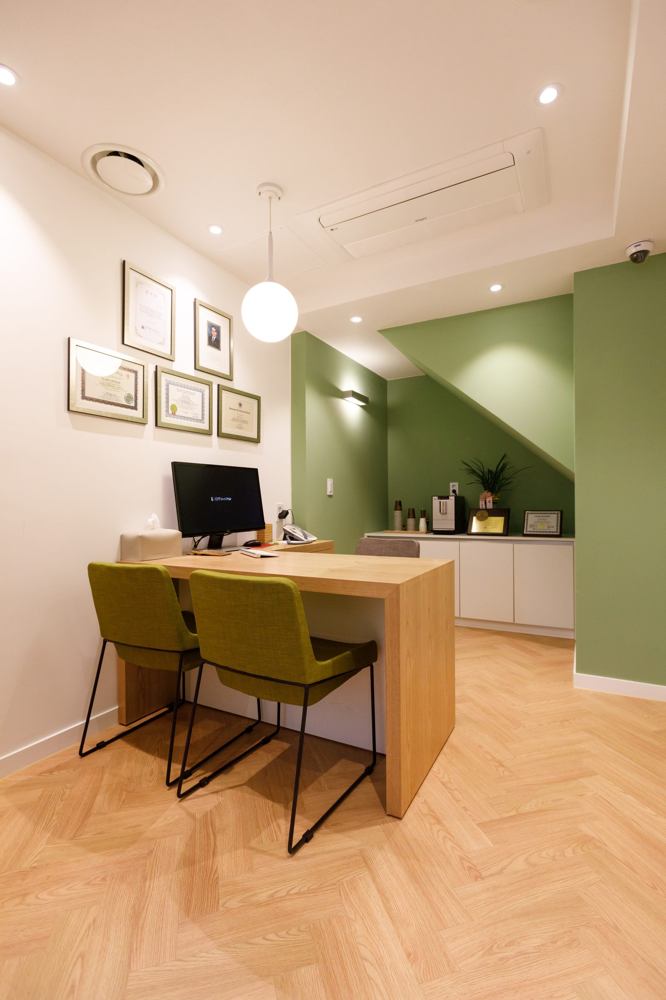
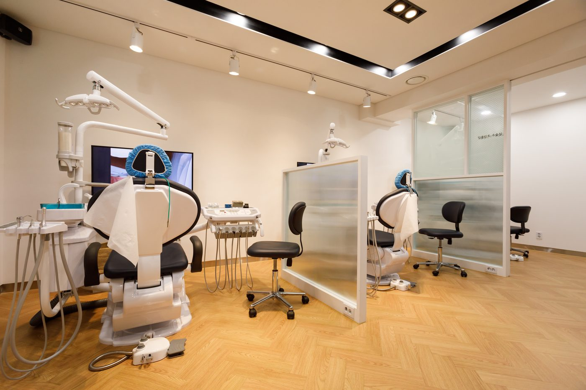
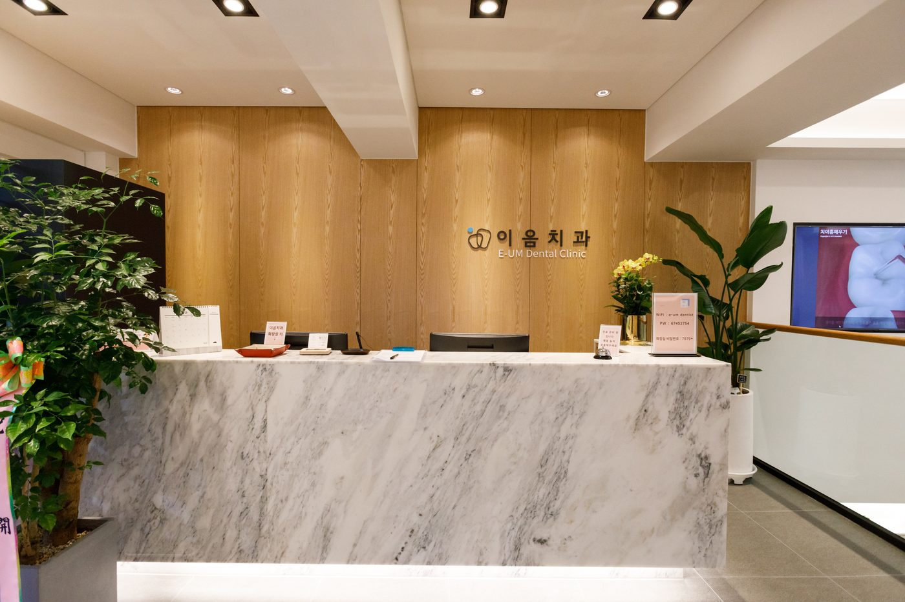
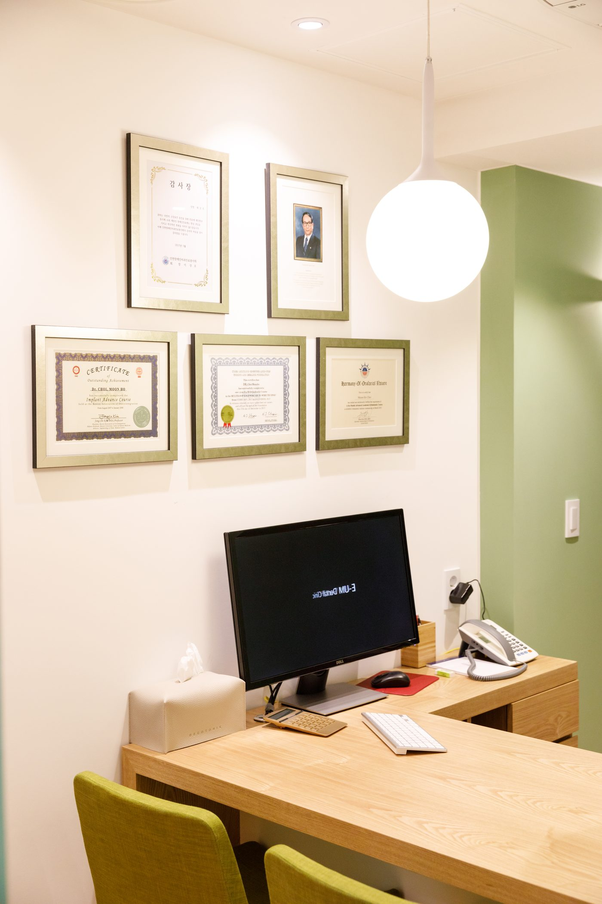
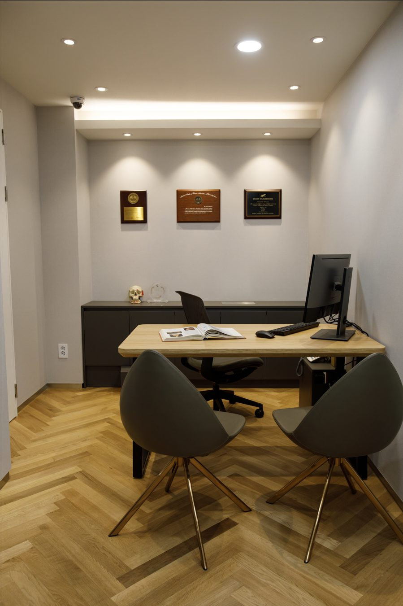
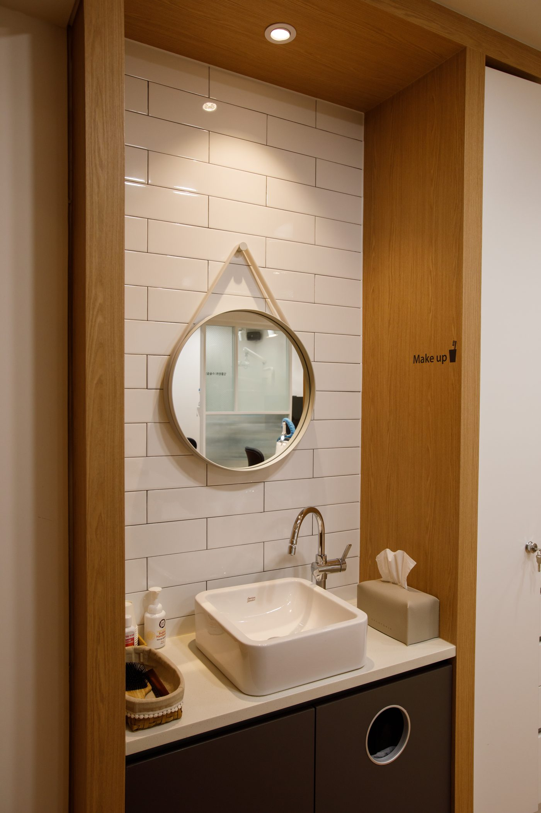
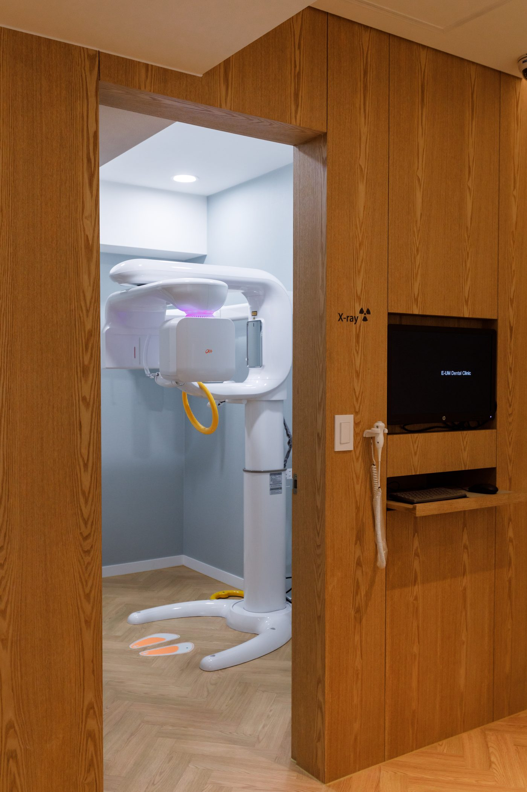

턱관절 · 교합 · 통증을 함께 살피는 진료.
치아만 보지 않고, 턱관절과 신경까지 확인합니다.
치아보철과 부분교정을 함께 진행하여 비대칭을 개선한 사례입니다.
가운데 손잡이를 좌우로 움직여 치료 전과 후를 비교해 보세요.
※ 위 사진은 본원의 실제 치료 사례이며, 치료 결과는 개인에 따라 다를 수 있습니다.

턱에서 소리가 나거나, 입이 잘 벌어지지 않거나, 아침마다 턱이 뻐근하신가요? 턱관절 장애는 정확한 원인 진단이 치료의 시작입니다.
이음턱편한치과는 치아만 보지 않고 턱관절과 교합, 통증까지 함께 살피며, 과잉진료 없이 꼭 필요한 치료만 정직하게 안내해 드립니다.
턱관절 치료를 중심으로, 구강 건강 전반을 함께 살핍니다.
수면 중 이갈이와 주간 이악물기 습관은 턱관절과 치아를 손상시킵니다. 맞춤 장치와 습관 교정으로 관리합니다.
치아 배열과 함께 교합(맞물림)의 균형을 살피는 교정 치료로, 턱관절에 편안한 교합을 만듭니다.
블로그에서 자세히 보기 →상실된 치아를 자연치아에 가깝게 회복합니다. 교합 균형을 고려한 정밀 식립으로 오래 쓰는 임플란트를 지향합니다.
블로그에서 자세히 보기 →
3D-CT와 정밀검사를 통해 턱관절 상태를 평가하고, 증상의 근본 원인을 분석합니다. 원인을 알아야 치료 방향이 정확해집니다.

환자 상태에 따라 턱관절 물리치료, 교합교정, 스플린트 등 비수술적 치료를 우선적으로 고려합니다.

충분한 상담을 통해 환자 개개인에게 맞는 치료 계획을 세우고, 검사 결과를 충분히 설명드린 후 치료 방향을 함께 결정합니다.
편안한 진료를 위한 공간을 소개합니다.






정확한 진단, 비수술적 치료, 그리고 보이지 않는 감염 관리까지 —
진료의 전 과정에 필요한 장비를 갖추고 있습니다.
디지털 3D-CT, 턱관절 초음파, 휴대용 엑스레이 등으로 원인을 정확히 찾습니다.
물리치료 레이저, 임플란트 표면처리기 등 비수술적·정밀 시술을 위한 장비를 갖췄습니다.
핸드피스 전용 멸균기, 플라즈마·고압증기 멸균기로 모든 기구를 환자마다 멸균합니다.
원장이 직접 쓰는 턱관절 건강 이야기 — 네이버 블로그에서 더 많은 글을 만나보세요.
| 월 · 화 · 수 · 금 | 09:30 – 18:00 (17:00 접수마감) |
| 토요일 | 09:30 – 13:00 (12:00 접수마감) |
| 목요일 | 정기휴무 |
| 일요일 · 공휴일 | 휴진 |
※ 휴게시간 12:30 – 14:00 (토요일 제외)